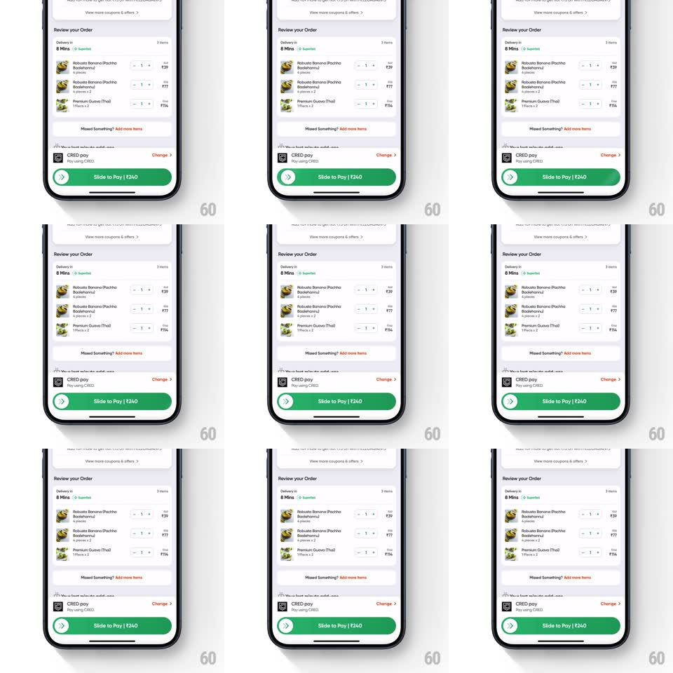

Media
Frame-by-frame

Rebuild this interaction 1:1: Swiggy's slide-to-pay - the green "Slide to Pay | Rs240" checkout button with a chevron thumb that the user drags right to confirm the transaction, with a shimmer that keeps hinting at the gesture.

Rebuild this interaction 1:1: Swiggy's slide-to-pay - the green "Slide to Pay | Rs240" checkout button with a chevron thumb that the user drags right to confirm the transaction, with a shimmer that keeps hinting at the gesture. ## Integration Integration: stack-agnostic spec - springs given as stiffness/damping, timed motions as duration + curve; map every value to your framework and animation library of choice. ## Scene The "Review your Order" checkout: item rows (Robusta Banana Pochha, Premium Guava Thai) with steppers and prices, "Missed Something? Add more items" link, payment row (CRED pay, Pay using CRED, Change), and pinned at the bottom the green slide-to-pay button: a chevron thumb in a circle at the left and the label "Slide to Pay | Rs240". ## Motion spec Pattern: slide-to-confirm. - Idle: a shimmer highlight sweeps left-to-right across the button label (every 2.2s, 900ms sweep) and the chevron thumb nudges right 6pt and back (with the shimmer). - Touch the thumb: the shimmer stops, the thumb tracks the finger 1:1 horizontally, and a lighter-green fill follows behind it from the left edge while the label fades toward 40%. - Release before 80%: thumb springs home (spring ~500/22, 220ms), fill recedes with it, label fades back, shimmer resumes. - Cross 80% and release: the thumb completes the track (spring ~420/24, 200ms), the fill floods the button, the label crossfades to a processing state, and the thumb morphs into a spinner. - Success: the button pulses once (scale 1 -> 1.04 -> 1) and the screen transitions to order confirmation. ## Calibration - The thumb is only grabbable from its circle - a drag starting on the label scrolls the page instead. - Full track distance ~260pt; the 80% commit threshold must be reachable with one thumb stroke. ## Reduced motion No shimmer; tap-and-hold 600ms confirms instead of dragging. ## Don't miss - The chevron thumb shows double chevrons (>>) pointing right - direction is drawn, not implied. - The fill edge has a soft gradient where it meets the unfilled green, not a hard line.